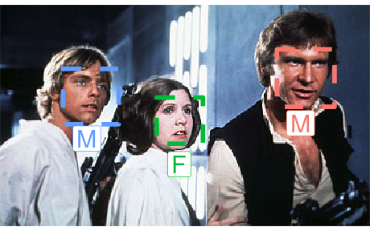

An Interface for Face Recognition in R
This package provides an interface to the Kairos Face Recognition API. The API detects faces in images and returns estimates for demographics. It is also capable of recognizing and verifying humans across several images.
Important note: Kairos decided to shut down its online demo for diversity recognition features (see here). As of July 2018, the API still returns ethnicity annotations, but it also seems as if they will not provide free access anymore. Until the release of an official statement from Kairos, I will stop the development of this package.
How to Install
To install the CRAN version of facerec use install.packages('facerec').
You can also download and install the latest development version of the app by running devtools::install_github('methodds/facerec'). For Windows users installing from github requires proper setup of Rtools, for which a tutorial is available here.
How to Use
Authentification
After loading facerec you first need to initiate your authentification credentials. Kairos offers a free plan for API access. After signing up, you will receive an application id and an application key. Both credentials need to be set as environment variables before using the initialization function facerec_init():
You only need to call facerec_init() once after loading the package. In order to avoid entering your credentials for each session, you can permanently store them in your .Renviron. I recommend usethis::edit_r_environ() to find and edit your environment file.
Face Recognition
Kairos accepts image of file type JPG, PNG, or BMP. Images can be passed to several facerec functions, either as an url string or a local image prepared with prep_image(). In the following example, detect() is used to recognize the face of the Star Wars character Finn:

finn_image <- 'https://upload.wikimedia.org/wikipedia/en/2/2a/Finn-Force_Awakens_%282015%29.png'
finn_face <- detect(image = finn_image)The function returns a dataframe with annotations for the recognized face in the input image. Variables include positional features of recognized faces, such as x and y coordinates for eyes. Moreover, demographic attributes like gender, ethnicity and age are available.
Features can be visualized with the packages magick and ggplot2:
library(magick)
library(ggplot2)
finn_image %>% image_read() %>% image_ggplot() +
geom_rect(data = finn_face,
aes(xmin = top_left_x, xmax = top_left_x + width,
ymin = top_left_y, ymax = top_left_y + height),
fill = NA, linetype = 'dashed', size = 2, color = '#377eb8') +
geom_label(data = finn_face,
aes(x = chin_tip_x, y = chin_tip_y + 20,
label = paste('Gender:',
scales::percent(face_gender_male_confidence),
'Male')), size = 6, color = '#377eb8') +
geom_label(data = finn_face,
aes(x = chin_tip_x, y = chin_tip_y + 60,
label = paste('Ethnicity:', scales::percent(face_black),
'Black')), size = 6, color = '#377eb8') +
theme(legend.position="none")
Kairos has some recommendations to improve the quality of its recognition service, but in general, the API also works with multiple faces inside an image:
sw_img <- "https://upload.wikimedia.org/wikipedia/en/8/82/Leiadeathstar.jpg"
sw_faces <- detect(sw_img)
sw_img %>% image_read() %>% image_ggplot() +
geom_rect(data = sw_faces,
aes(xmin = top_left_x , xmax = top_left_x + width,
ymin = top_left_y, ymax = top_left_y + height,
color = factor(face_id)),
fill = NA, linetype = 'dashed', size = 2) +
geom_label(data = sw_faces,
aes(x = chin_tip_x, y = chin_tip_y + 15,
label = face_gender_type,
color = factor(face_id)), size = 8) +
theme(legend.position="none")
Besides annotating faces in single images, face recognition data can be stored permantly with the Kairos. This allows to assign multiple images to subject ids and to provide estimates about whether faces from different images belong to the same subjects.
finn_face <- enroll(image = finn_image, subject_id = 'finn', gallery = 'starwars')
finn_new <- 'https://upload.wikimedia.org/wikipedia/commons/b/b6/John_Boyega_by_Gage_Skidmore.jpg'
finn_rec <- recognize(image = finn_new, gallery = 'starwars',
show_candidate_images = FALSE)The function recognize() returns a dataframe including the probability of a match in the column confidence.
Citation
If you use facerec for your publications please consider citing it:
Carsten Schwemmer (2018). facerec: An interface for face recognition in R. R package version 0.1.0.
https://github.com/methodds/facerecA BibTeX entry for LaTeX users is:
@Manual{,
title = {facerec: An interface for face recognition in R},
author = {Carsten Schwemmer},
year = {2018},
note = {R package version 0.1.0},
url = {https://github.com/methodds/facerec},
}